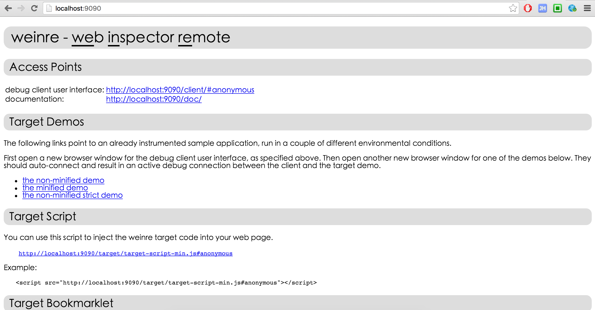
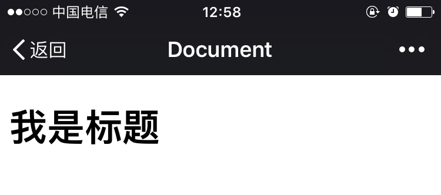
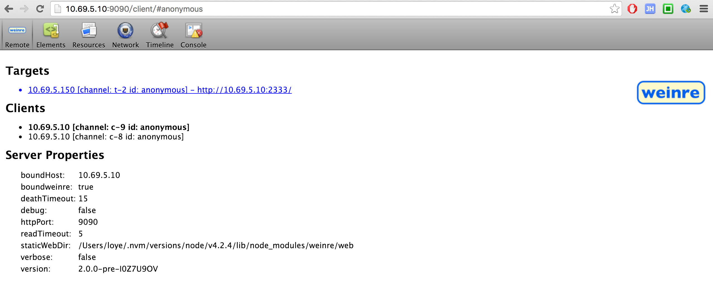

mobile-debug
UC浏览器开发版（仅限安卓平台）
超级强大，样式、脚本、资源，都可以调试，而且UC在移动端份额最大，针对性很高。
1、 UC浏览器开发版
2、 官方的文档已经很详细了，包括两种调试方法，无线和有线。有线的调试很复杂，需要ADB工具，需要数据线，所以还是直接无线调试比较好。
3、 无线调试方法简记：
- 安卓手机安装UC浏览器的开发版
- 保证手机和电脑在同一个局域网
- 记录下手机的ip地址，比如手机ip为
10.69.5.150 - 在UC浏览器中打开需要调试的页面
- 电脑上打开
10.69.5.150:9998即可开始开心的调试（和chrome控制台相差不大）
weinre本地服务器（全平台）
weinre是专门的网页调试工具，它会在本地创建一个监听服务器，然后你需要在被调试页面插入一个它提供的js，然后weinre就可以监听到，然后即可开始调试。
1、 weinre官网
2、 weinre npm
3、 调试步骤
- 本地全局安装weinre
1 | npm install weinre -g |
- 启动本地 weinre 服务
1 | weinre --boundHost 10.69.5.10 --httpPort 9090 |
- 参数解释
1 | --boundHost 10.69.5.10 : 在你局域网的地址开启服务 |
访问pc调试界面
如果启动服务时指定了ip和端口，访问此ip的指定端口即可。
本例地址为：http://10.69.5.10:9090/在调试页面插入监听脚本
在调试页面中插入下图中 Target Script 中的js，本例即http://10.69.5.10:9090/target/target-script-min.js#anonymous。#anonymous这个是页面标志，不同的标志在选取目标调试页时可以起到识别作用。

假设页面代码如下1
2
3
4
5
6
7
8
9
10
11
12
13
14
15
16
<html lang="en">
<head>
<meta charset="UTF-8">
<meta name="viewport" content="width=device-width, initial-scale=1.0, maximum-scale=1.0, minimum-scale=1.0, user-scalable=no, minimal-ui">
<meta name="format-detection" content="telephone=no">
<title>Document</title>
</head>
<body>
<h1 id="test">我是标题</h1>
<script type="text/javascript" src="http://10.69.5.10:9090/target/target-script-min.js"></script>
</body>
</html>在终端访问此页面（apache可以直接有个本地http服务，nodejs需要自己启一个）
1
2
3
4
5
6
7
8
9
10// 在本地的2333端口开启服务，返回上面的测试页
;
var express = require('express');
var app = express();
var pwd = __dirname;
var port = 2333;
app.get('/', function(req, res, next) {
res.sendFile(pwd + '/test.html')
})
app.listen(2333);
此时访问 10.69.5.10::2333 就可以看到上面测试页的内容
然后在局域网的其它终端访问此页面都可以看到

此时打开 http://10.69.5.10:9090/client/ 你会看到

选中 Targets 里的地址即可开始调试，如下图

4、其它
weinre最大的缺点就是不能调试js，虽然它实现了一个简单的js解释器，能在自己的控制台操作dom，但是本身页面里的调试信息没法在这捕获，遗憾。
但是它支持全平台，不管是wap还是app，只要是前端的html页面，都可以调试，遇到一些奇葩的兼容性问题很好找。
如果真心用这个工具，我们还可以在测试服务器搭一个代理服务，任何线上页面走这个代理服务器，都会被注入那段监听的js，测试机访问代理服务器吐出的地址，pc机访问统一的控制台页面，本地什么配置都不用，就可以开始真机调试。
再深入的话也可以深究一下weinre的js调试问题，那就圆满了。。。脑洞ing。。。